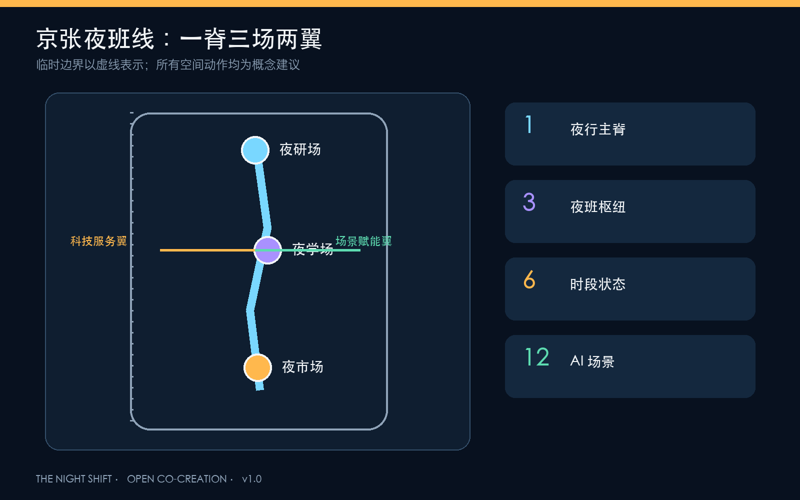
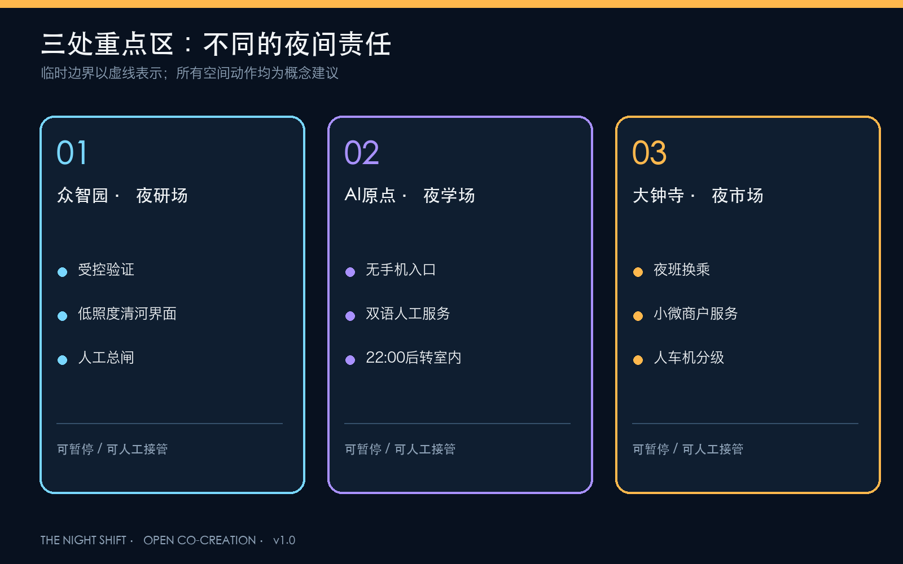
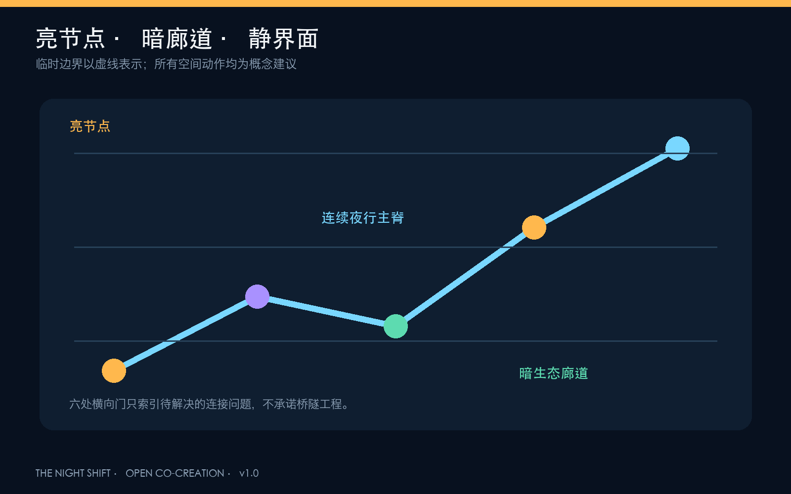

夜研场
受控验证、清河暗岸、人工总闸
让创新晚睡，让城市好眠

受控验证、清河暗岸、人工总闸
无手机入口、双语人工服务、夜校
夜班换乘、小微服务、人车机分级


12 张场景卡含 4 项测试验证；所有场景均设置数据最小化、人工接管和退出条件。
结构化文件覆盖 23 项必答任务、15 项设计深度与专业标准；本页数值与 metrics.json 同源。
来源、许可、临时性与禁止用途见 sources.json；边界、控规、夜间基线、运营、隐私与文保生态缺口见 assumptions.json。